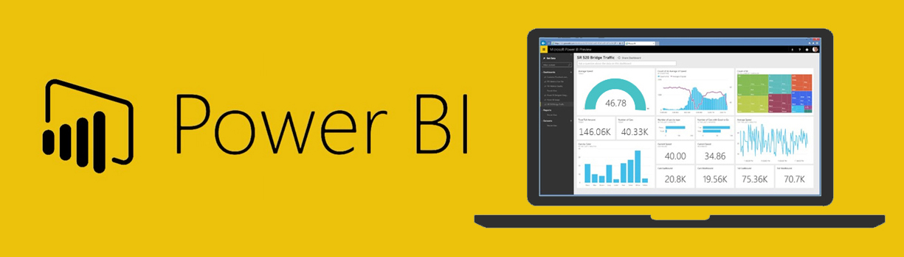
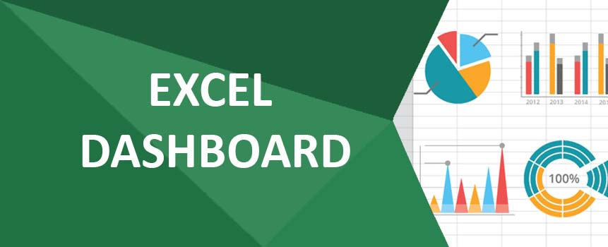

In this project, we used Microsoft SQL Server to transform raw housing data into a more usable form for analysis.

In this project, we used Microsoft SQL Server to conduct a data exploration of global COVID-19 dataset, focusing on death and vaccination rates as key indicators of the pandemic's impact.

Tableau dashboards for project on global COVID-19 dataset, covering the total number of deaths & vaccination over time to see how the pandemic has progressed globally.

In this project, we used Python (with factorization) to examine the factors that affect gross revenue from movies to gain a deeper understanding of the movie industry.
In this project, we used data scraping to analyze product pricing on Amazon and identify opportunities to save money through automated price monitoring, particularly during holiday sales.

In this project, we used PowerBI to analyze a survey of data professionals, examining their origin country, age, job title, programming language, and happiness and work/life balance.

Using Tableau and the Airbnb dataset, we created a dashboard to identify the most profitable areas in Seattle to invest in a house based on the average rental price per bedroom, rental prices by zip code, and revenue per previous years.

Through the use of CoinMarketCap API and automation, we collect crypto coin data and analyze trends over time in this project.

This ETL project extracts crypto coin market data from CoinMarketCap API to demonstrates skills in API integration, ETL pipeline development and data analysis using Python.

Using Excel, we create a dashboard in this project that illustrates bike sales based on income level, age, and daily commute distance.